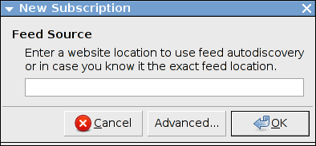
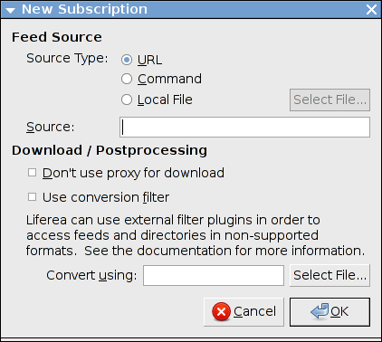
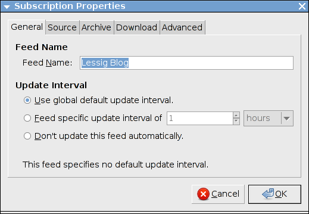
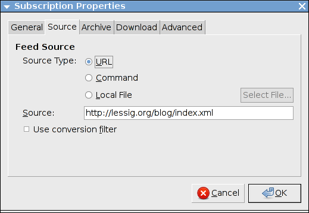

Questa sezione documenta tutte le interazioni dell'utente necessarie a creare e mantenere gli abbonamenti.
Cose Alle Quali Liferea Può Abbonarsi
In quanto aggregatore di notiziari Liferea ti permette di abbonarti a differenti sorgenti di notizie. Il caso d'uso più comune è di abbonarsi a notiziari singoli. Ma Liferea supporta anche abbonamenti a fonti che offrono una collezione di notiziari. Quanti puoi abbonarti a:
- un notiziario singolo
- una fonte OPML (un elenco planet di notiziari, un blogroll...)
- un account online su TheOldReader
- un account online su TinyTinyRSS
Abbonarsi a un Notiziario
Per creare un nuovo abbonamento ad un notiziario seleziona "Nuovo Abbonamento" dal menu contestuale dell'elenco notiziari o dal menu "Notiziario". Apparirà una finestra per creare un nuovo abbonamento.

Ad esempio, per abbonarti al notiziario di Slashdot inserisci "http://slashdot.org/index.rss" nella casella di testo e clicca su "OK".
Creare Abbonamenti Speciali ai Notiziari
Liferea supporta l'ottenimento di notiziari da fonti differenti inclusi URLs di Internet, l'output di un comando locale, e la lettura diretta da un file. Spesso, si desidera abbonarsi a un notiziario usando un URL come descritto nel paragrafo precedente. Per l'abbonamento speciale devi selezionare "Avanzato…" per aprire la seguente finestra per gli abbonamenti complessi:

Dopo aver selezionato il tipo di fonte desiderata, inserisci l'URL sorgente, il nome del comando, o il nome del file nella casella di testo "Fonte".
Quando viene selezionato un comando o un file locale, il comando o il file possono essere scelti usando una finestra di navigazione cliccando "Seleziona File…".
Talvolta, la data in un notiziario è in un formato che Liferea non conosce. Se questo è il caso, può essere utilizzato un filtro di conversione per convertirla in un formato adatto. Molti filtri possono essere scaricati dall'archivio di script di Snownews e Liferea.
Per usare i filtri di conversione, l'opzione "Usare filtro di conversione" dev'essere attivata nella finestra degli abbonamenti. Lo script filtro viene specificato scrivendone il percorso nella casella di testo "Convertire usando" o selezionandolo dopo aver cliccato il pulsante "Seleziona file…". I filtri sono semplici programmi che leggono il formato di notiziario non supportato usando stdin e producono un notiziario valido via stdout. I filtri di conversione vengono spesso codificati in Perl.
Cambiare le Proprietà di un Abbonamento
La finestra delle proprietà del notiziario viene utilizzata per configurare le proprietà aggiuntive del notiziario e può essere attivata nel menu "Notiziario" o dal menu contestuale del notiziario. Dopo aver creato con successo un nuovo abbonamento non avrai in genere bisogno di alterarne le proprietà.
Avrai bisogno di utilizzare questa finestra solo quando vorrai modificare l'autenticazione HTTP, la gestione della memoria o altre opzioni specifiche del notiziario.
La finestra raggruppa le proprietà del notiziario in cinque insiemi: "Generale", "Fonte", "Archivio", "Scaricamento" e "Avanzato":
Generale

Il pannello "Generale" ti permette di scegliere il titolo del notiziario e l'intervallo di aggiornamento. Il nome del notiziario è quello mostrato nell'elenco. Più notiziari possono avere lo stesso nome.
L'intervallo di aggiornamento del notiziario determina quando spesso Liferea cercherà di aggiornare il notiziario. Tipicamente, l'intervallo di aggiornamento del notiziario può essere lasciato al suo valore predefinito. Raccomandiamo di utilizzare la preferenza globale che puoi trovare nella finestra delle preferenze perché ti consente di modificare l'intervallo di aggiornamento di tutti i notiziari in contemporanea.
Talvolta un notiziario fornisce un proprio intervallo di aggiornamento. Se questo è il caso Liferea attiva automaticamente l'impostazione per specificare un intervallo di aggiornamento personalizzato e la popola con questo valore. Questo viene fatto solo durante la creazione iniziale dell'abbonamento al notiziario. Non dovresti mai aver bisogno di cambiare questa impostazione.
L'intervallo di aggiornamento può essere settato su:
- Usare l'intervallo di aggiornamento globale predefinito.
- Questa impostazione viene utilizzata da tutti i notiziari che rispettano l'intervallo di aggiornamento globale.
- Intervallo specifico di aggiornamento del notiziario
- Ci potrebbero essere situazioni in cui desideri un intervallo aggiornamento più o meno frequente di quello predefinito. In tal caso dovresti selezionare questa opzione e specificarlo. Quando specifichi un intervallo di aggiornamento, dovresti considerare il traffico web che causerai con un intervallo di aggiornamento non appropriato. Non aggiornare più frequentemente di quanto i contenuti siano in genere pubblicati.
- Non aggiornare automaticamente questo notiziario.
- Questa opzione ti consente di prevenire l'aggiornamento del notiziario. Puoi usare questa opzione per i notiziari che vuoi aggiornare solo manualmente ogni volta.
Fonte

Il pannello "Fonte" contiene gli stessi campi contenuti nella finestra per l'abbonamento avanzato. Puoi utilizzare queste impostazioni per cambiare la fonte del notiziario (es. dopo che l'URL di un notiziario è variato).
Archivio

Il terzo pannello, "Archivio", controlla quanti oggetti di un notiziario sono mantenuti quando Liferea lo salva su disco. In modo simile all'intervallo di aggiornamento v'è una preferenza globale corrispondente che imposta la dimensione della memoria per tutti i notiziari. Dovresti utilizzare questo pannello solo per implementare eccezioni alla politica di memorizzazione globale.
- Impostazioni di caching predefinite
- Fa sì che il notiziario erediti le impostazioni predefinite, che sono conservate nelle preferenze di Liferea.
- Disabilita la cache
- Impedisce che gli oggetti del notiziario vengano salvati.
- Cache illimitata
- Salva sempre tutti gli oggetti scaricati.
- Numero di articoli da salvare
- Limita la grandezza della memoria a un numero fisso.
Nota: Gli oggetti marchiati saranno sempre conservati, a prescindere dalle impostazioni di memorizzazione. Quindi se hai trovato un titolo importante e vuoi evitare che venga scartato dalla memoria lo puoi marchiare.
Scaricamento

Questa scheda ti permette di disabilitare l'uso delle impostazioni globali del proxy e di abilitare l'autenticazione HTTP durante lo scaricamento del notiziario. Abilita la casella di controllo ed inserisci i valori appropriati per nome utente e password per poter utilizzare i notiziari protetti da password. In genere non avrai bisogno di utilizzare queste impostazioni perché il nome utente e la password ti verranno richiesti durante l'abbonamento al notiziario che richiede l'autenticazione.
Avanzato

Questo pannello fornisce certe opzioni speciali per controllare come Liferea gestisce l'abbonamento. Queste opzioni sono:
- Scaricare automaticamente tutti gli allegati di questo notiziario.
- Questo può essere utile per podcast o notiziari sui torrent. Se abiliti l'opzione Liferea scarica gli allegati.
- Caricare automaticamente il collegamento dell'articolo nel browser configurato quando sono selezionati gli articoli.
- Di default Liferea mostra la descrizione dell'oggetto nel pannello di visualizzazione HTML. Quando questa casella di controllo è abilitata esso caricherà il link dell'oggetto automaticamente quando l'oggetto selezionato cambia.
- Ignorare i commenti del notiziario per questo abbonamento.
- Talvolta ci sono notiziari con commenti corrotti o inutili. Questa opzione ti consente di ignorarli.
- Forza la notifica popup per questo articolo.
- Se la preferenza di notifica globale è disabilitata puoi abilitare quest'opzione per generare notifiche solo per questo notiziario.
- Non mostrare mai notifiche popup per questo articolo.
- Se la preferenza di notifica globale è abilitata puoi usare quest'opzione per per prevenire notifiche da questo notiziario. Ciò potrebbe essere utile per i notiziari aggiornati frequentemente.
- Segnare articoli scaricati come letti.
- Di norma i nuovi oggetti hanno lo stato "non letto". Certe volte potresti voler utilizzare questo settaggio per far si che i nuovi oggetti di un notiziario speciale non appaiano come "non letti" così non li dovrai segnare manualmente come "letti".
Abbonarsi a Fonti OPML e Servizi Online
Per abbonarti agli elenchi di notiziari OPML o ad account di servizi online seleziona "Nuova Fonte" dal menu contestuale dell'elenco degli abbonamenti o dal menu "Notiziari". Dalla finestra che appare seleziona il tipo di fonte che desideri creare.
Fonti OPML
Se hai selezionato "Planet, BlogRoll, OPML" hai bisogno di fornire l'URL del documento OPML. Se serve inserisci le informazioni di autenticazione. Dopo averlo fatto un nuovo nodo sorgente OPML sarà inserito nell'elenco dei notiziari e, dopo aver scaricato il documento OPML per la prima volta, i nuovi abbonamenti descritti dalla fonte OPML verranno creati. Se l'elenco di notiziari OPML cambia nel tempo i vecchi abbonamenti vengono scartati e ne vengono aggiunti di nuovi.